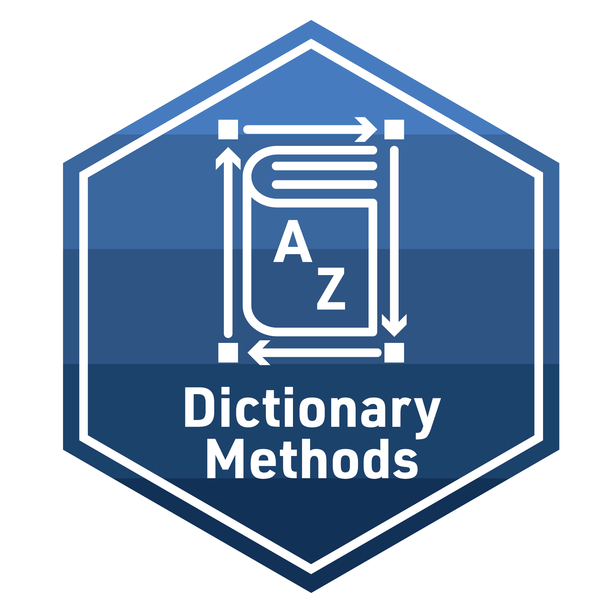

# YOUR FINAL R CODE HEREAnalyzing Sentiment
Module 2: Badge

The final activity for each learning module provides space to work with data and to reflect on how the concepts and techniques introduced in each module might apply to your own research.
To earn a badge for each module, you are required to respond to a set of prompts for two parts:
In Part I, you will reflect on your understanding of key concepts addressed in the case study and essential readings and begin to think about potential next steps for your own study.
In Part II, you will create a simple data product in R that demonstrates your ability to apply a data analysis technique introduced in this learning module.
Part I: Reflect and Plan
Use your institutional library, Google Scholar, or search engine of your choice to locate a research article, presentation, or resource that applies text mining to an educational context or topic of interest. More specifically, locate a research study that makes use of dictionary-based methods like those demonstrated in our Module 2 Case Study. You are also welcome to select one of the research papers listed in the essential readings that may have piqued your interest.
Provide an APA citation for your selected study.
What was the purpose of your article?
How was Text Mining defined and/or characterized?
What data source(s) were analyzed or discussed?
How, if at all, did your article touch upon the application(s) of text mining to “understand and improve learning and the contexts in which learning occurs?”
Did your selection address any ethical or legal considerations of text mining? If so, describe.
Draft a research question for a population you may be interested in studying, or that would be of interest to educational researchers, and that would require the collection of text-based data and answer the following questions:
What text-based data would need to be collected?
For what reason would relational data need to be collected in order to address this question?
How dictionary-based methods would be used to analyze your data?
How might you communicate your findings from your analyses for your targeted audience?
Part II: Data Product
For your second TM badge, your goal is to distill the analysis from our case study into a simple “data product” designed to illustrate a key finding from our analysis that has not already been covered in the case study. Your target audience is developers of online professional learning opportunities who are looking to receive feedback on what’s working well and potential areas for improvement. This allows us to assume a good deal of prior knowledge on their end about the context of the evaluation, simplifying our data product and narrative and reducing the level of detail needed to communicate useful information.
For your independent analysis, you will demonstrate your ability to formulate a basic research question, wrangle and analyze data, and create a simple data product to illustrate key findings. Your primary goal is to analyze a text-based data by applying the knowledge and skills acquired from the course readings and case study.
you will demonstrate your ability to formulate a basic research question, wrangle and analyze relational data, and create a simple data product to illustrate key findings. Your primary goal is to analyze a text-based data by applying the knowledge and skills acquired from the course readings and case study. Specifically, your assignment this week is to:
Identity a data source. I’ve included the
ccss-tweets.csvandccss-tweets.csvdata files from our case study in a data folder located the Unit 2 Analysis project in our Posit Cloud Workspace. You are also welcome to identify your own text-based data source related to an area of personal or professional interest. However, if you choose to use an alternative data source, you will need to specify the context in which it was collected and the audience for whom your analysis intended.Formulate a question. I recommend keeping this simple and limiting to no more than one or two questions. Your question(s) should be appropriate to your data set and ideally be answered by applying concepts and skills from our course readings and case study.
Analyze the data. I highly recommend creating a new R script in your project space to use as you work through data wrangling and analysis. Your R script will likely contain code that doesn’t make it into your Quarto presentation or report since you will likely experiment with different approaches and figure out code that works and code that does not.
Create a data product. When you feel you’ve wrangled and analyzed the data to your satisfaction, create an Quarto file that includes a polished graph and/or data table and a narrative highlighting your research question, data source, and key findings and potential implications. Your file should include all code necessary to read, wrangle, and explore your data.
Share your findings. Render your data product to a desired output format. I recommend using the example data product I’ve included in the project folder to create an HTML slide deck like this example, but you are welcome to experiment with other formats as well.
I highly recommend creating a new R script to complete this task. When your code is ready to share, use the appropriate code chunk below to share the all the code necessary to reproduce your analysis and create your data product.
Narrative
- WRITE A BRIEF NARRATIVE OF YOUR ANALYSIS HERE
To receive your TM Badge, you will need to render this document and publish via a method designated by your instructor such as: Quarto Pub, Posit Cloud, RPubs , GitHub Pages, or other methods. Once you have shared a link to you published document with your instructor and they have reviewed your work, you will be provided a physical or digital version of the badge pictured at the top of this document!
If you have any questions about this badge, or run into any technical issues, don’t hesitate to contact your instructor.